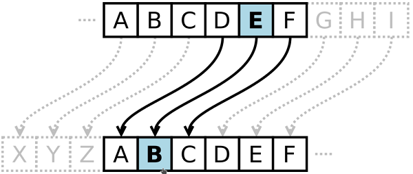

Jeden z najstarszych sposobów szyfrowania pochodzi od Juliusza Cezara, który szyfrował swoją korespondencję z Cyceronem. Sposób ten polegał na tym, że zamiast każdej litery pisał literę występującą w alfabecietrzy miejsca dalej. Tak więc, jeśli użyjemy dzisiejszego alfabetu łacińskiego
Każda litera tekstu jawnego jest zastępowana inną literą, która jest od niej oddalona o stałą liczbę pozycji w alfabecie. Jeśli algorytm wskazywałby na pozycję, która wychodzi poza ostatnią literę w alfabecie, to przechodzi się na początek alfabetu. Poniżej schemat.
W poniższym formularzu w polu "Tekst Wejściowy" wprowadź tekst do zakodowania, a w polu "Kod" możesz wprowadzić liczbę całkowitą, o którą będzie przestawiony wprowadzony tekst.
Wynik kodowania uzyskamy w polu "Tekst kodowany". Pole "Tekst dekodowany" jest wynikiem operacji odwrotnej do kodowania gdzie zakodowany kod umieszczony jest w polu "Tekst Wejściowy"
Tekst Wejściowy:
Kod:
Tekst kodowany:
Tekst dekodowany: